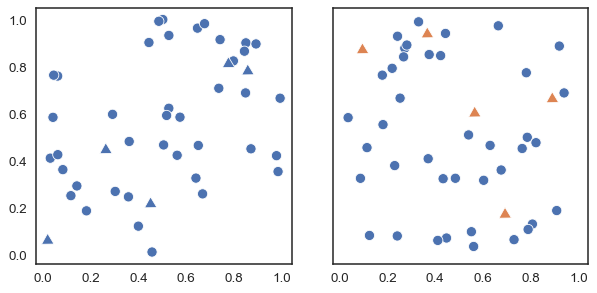
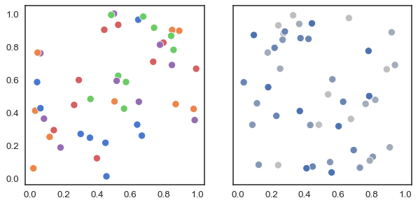
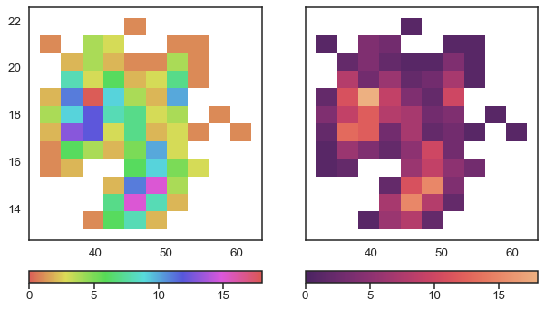

Choosing color palettes¶
Seaborn makes it easy to use colors that are well-suited to the characteristics of your data and your visualization goals. This chapter discusses both the general principles that should guide your choices and the tools in seaborn that help you quickly find the best solution for a given application.
General principles for using color in plots¶
Components of color¶
Because of the way our eyes work, a particular color can be defined using three components. We usually program colors in a computer by specifying their RGB values, which set the intensity of the red, green, and blue channels in a display. But for analyzing the perceptual attributes of a color, it’s better to think in terms of hue, saturation, and luminance channels.
Hue is the component that distinguishes “different colors” in a non-technical sense. It’s property of color that leads to first-order names like “red” and “blue”:
Saturation (or chroma) is the colorfulness. Two colors with different hues will look more distinct when they have more saturation:
And lightness corresponds to how much light is emitted (or reflected, for printed colors), ranging from black to white:
Vary hue to distinguish categories¶
When you want to represent multiple categories in a plot, you typically should vary the color of the elements. Consider this simple example: in which of these two plots is it easier to count the number of triangular points?
In the plot on the right, the orange triangles “pop out”, making it easy to distinguish them from the circles. This pop-out effect happens because our visual system prioritizes color differences.
The blue and orange colors differ mostly in terms of their hue. Hue is useful for representing categories: most people can distinguish a moderate number of hues relatively easily, and points that have different hues but similar brightness or intensity seem equally important. It also makes plots easier to talk about. Consider this example:
Most people would be able to quickly ascertain that there are five distinct categories in the plot on the left and, if asked to characterize the “blue” points, would be able to do so.
With the plot on the right, where the points are all blue but vary in their luminance and saturation, it’s harder to say how many unique categories are present. And how would we talk about a particular category? “The fairly-but-not-too-blue points?” What’s more, the gray dots seem to fade into the background, de-emphasizing them relative to the more intense blue dots. If the categories are equally important, this is a poor representation.
So as a general rule, use hue variation to represent categories. With that said, here are few notes of caution. If you have more than a handful of colors in your plot, it can become difficult to keep in mind what each one means, unless there are pre-existing associations between the categories and the colors used to represent them. This makes your plot harder to interpret: rather than focusing on the data, a viewer will have to continually refer to the legend to make sense of what is shown. So you should strive not to make plots that are too complex. And be mindful that not everyone sees colors the same way. Varying both shape (or some other attribute) and color can help people with anomalous color vision understand your plots, and it can keep them (somewhat) interpretable if they are printed to black-and-white.
Vary luminance to represent numbers¶
On the other hand, hue variations are not well suited to representing numeric data. Consider this example, where we need colors to represent the counts in a bivariate histogram. On the left, we use a circular colormap, where gradual changes in the number of observation within each bin correspond to gradual changes in hue. On the right, we use a palette that uses brighter colors to represent bins with larger counts:
With the hue-based palette, it’s quite difficult to ascertain the shape of the bivariate distribution. In contrast, the luminance palette makes it much more clear that there are two prominant peaks.
Varying luminance helps you see structure in data, and changes in luminance are more intuitively processed as changes in importance. But the plot on the right does not use a grayscale colormap. Its colorfulness makes it more interesting, and the subtle hue variation increases the perceptual distance between two values. As a result, small differencess slightly easier to resolve.
These examples show that color palette choices are about more than aesthetics: the colors you choose can reveal patterns in your data if used effectively or hide them if used poorly. There is not one optimal palette, but there are palettes that are better or worse for particular datasets and visualization approaches.
And aesthetics do matter: the more that people want to look at your figures, the greater the chance that they will learn something from them. This is true even when you are making plots for yourself. During exploratory data analysis, you may generate many similar figures. Varying the color palettes will add a sense of novelty, which keeps you engaged and prepared to notice interesting features of your data.
So how can you choose color palettes that both represent your data well and look attractive?
Tools for choosing color palettes¶
The most important function for working with color palettes is, aptly, color_palette(). This function provides an interface to most of the possible ways that one can generate color palettes in seaborn. And it’s used internally by any function that has a palette argument.
The primary argument to color_palette() is usually a string: either the a name of a specific palette or the name of a family and additional arguments to select a specific member. In the latter case, color_palette() will delegate to more specific function, such as cubehelix_palette(). It’s also possible to pass a list of colors specified any way that matplotlib accepts (an RGB tuple, a hex code, or a name in the X11 table). The return value is an object that wraps a list of RGB tuples with a few useful methods, such as conversion to hex codes and a rich HTML representation.
Calling color_palette() with no arguments will return the current default color palette that matplotlib (and most seaborn functions) will use if colors are not otherwise specified. This default palette can be set with the corresponding set_palette() function, which calls color_palette() internally and accepts the same arguments.
To motivate the different options that color_palette() provides, it will be useful to introduce a classification scheme for color palettes. Broadly, palettes fall into one of three categories:
qualitative palettes, good for representing categorical data
sequential palettes, good for representing numeric data
diverging palettes, good for representing numeric data with a categorical boundary
Qualitative color palettes¶
Qualitative palettes are well-suited to representing categorical data because most of their variation is in the hue component. The default color palette in seaborn is a qualitative palette with ten distinct hues:
sns.color_palette()
These colors have the same ordering as the default matplotlib color palette, "tab10", but they are a bit less intense. Compare:
sns.color_palette("tab10")
Seaborn in fact has six variations of matplotlib’s palette, called deep, muted, pastel, bright, dark, and colorblind. These span a range of average luminance and saturation values:

Many people find the moderated hues of the default "deep" palette to be aesthetically pleasing, but they are also less distinct. As a result, they may be more difficult to discriminate in some contexts, which is something to keep in mind when making publication graphics. This comparison can be helpful for estimating how the the seaborn color palettes perform when simulating different forms of colorblindess.
Using circular color systems¶
When you have an arbitrary number of categories, the easiest approach to finding unique hues is to draw evenly-spaced colors in a circular color space (one where the hue changes while keeping the brightness and saturation constant). This is what most seaborn functions default to when they need to use more colors than are currently set in the default color cycle.
The most common way to do this uses the hls color space, which is a simple transformation of RGB values. We saw this color palette before as a counterexample for how to plot a histogram:
sns.color_palette("hls", 8)
Because of the way the human visual system works, colors that have the same luminance and saturation in terms of their RGB values won’t necessarily look equally intense To remedy this, seaborn provides an interface to the husl system (since renamed to HSLuv), which achieves less intensity variation as you rotate around the color wheel:
sns.color_palette("husl", 8)
When seaborn needs a categorical palette with more colors than are available in the current default, it will use this approach.
Using categorical Color Brewer palettes¶
Another source of visually pleasing categorical palettes comes from the Color Brewer tool (which also has sequential and diverging palettes, as we’ll see below).
sns.color_palette("Set2")
Be aware that the qualitative Color Brewer palettes have different lengths, and the default behavior of color_palette() is to give you the full list:
sns.color_palette("Paired")
Sequential color palettes¶
The second major class of color palettes is called “sequential”. This kind of mapping is appropriate when data range from relatively low or uninteresting values to relatively high or interesting values (or vice versa). As we saw above, the primary dimension of variation in a sequential palette is luminance. Some seaborn functions will default to a sequential palette when you are mapping numeric data. (For historical reasons, both categorical and numeric mappings are specified with the hue parameter in functions like relplot() or displot(), even though numeric mappings use color palettes with relatively little hue variation).
Perceptually uniform palettes¶
Because they are intended to represent numeric values, the best sequential palettes will be perceptually uniform, meaning that the relative discriminability of two colors is proportional to the difference between the corresponding data values. Seaborn includes four perceptually uniform sequential colormaps: "rocket", "mako", "flare", and "crest". The first two have a very wide luminance range and are well suited for applications such as heatmaps, where colors fill the space they are plotted into:
sns.color_palette("rocket", as_cmap=True)

sns.color_palette("mako", as_cmap=True)

Because the extreme values of these colormaps approach white, they are not well-suited for coloring elements such as lines or points: it will be difficult to discriminate important values against a white or gray background. The “flare” and “crest” colormaps are a better choice for such plots. They have a more restricted range of luminance variations, which they compensate for with a slightly more pronounced variation in hue. The default direction of the luminance ramp is also reversed, so that smaller values have lighter colors:
sns.color_palette("flare", as_cmap=True)

sns.color_palette("crest", as_cmap=True)

It is also possible to use the perceptually uniform colormaps provided by matplotlib, such as "magma" and "viridis":
sns.color_palette("magma", as_cmap=True)

sns.color_palette("viridis", as_cmap=True)

As with the convention in matplotlib, every continuous colormap has a reversed version, which has the suffix "_r":
sns.color_palette("rocket_r", as_cmap=True)

Discrete vs. continuous mapping¶
One thing to be aware of is that seaborn can generate discrete values from sequential colormaps and, when doing so, it will not use the most extreme values. Compare the discrete version of "rocket" against the continuous version shown above:
sns.color_palette("rocket")
Interally, seaborn uses the discrete version for categorical data and the continuous version when in numeric mapping mode. Discrete sequential colormaps can be well-suited for visualizing categorical data with an intrinsic ordering, especially if there is some hue variation.
Sequential “cubehelix” palettes¶
The perceptually uniform colormaps are difficult to programmatically generate, because they are not based on the RGB color space. The cubehelix system offers an RGB-based compromise: it generates sequential palettes with a linear increase or decrease in brightness and some continuous variation in hue. While not perfectly perceptually uniform, the resulting colormaps have many good properties. Importantly, many aspects of the design process are parameterizable.
Matplotlib has the default cubehelix version built into it:
sns.color_palette("cubehelix", as_cmap=True)

The default palette returned by the seaborn cubehelix_palette() function is a bit different from the matplotlib default in that it does not rotate as far around the hue wheel or cover as wide a range of intensities. It also reverses the luminance ramp:
sns.cubehelix_palette(as_cmap=True)

Other arguments to cubehelix_palette() control how the palette looks. The two main things you’ll change are the start (a value between 0 and 3) and rot, or number of rotations (an arbitrary value, but usually between -1 and 1)
sns.cubehelix_palette(start=.5, rot=-.5, as_cmap=True)

The more you rotate, the more hue variation you will see:
sns.cubehelix_palette(start=.5, rot=-.75, as_cmap=True)

You can control both how dark and light the endpoints are and their order:
sns.cubehelix_palette(start=2, rot=0, dark=0, light=.95, reverse=True, as_cmap=True)

The color_palette() accepts a string code, starting with "ch:", for generating an arbitrary cubehelix palette. You can passs the names of parameters in the string:
sns.color_palette("ch:start=.2,rot=-.3", as_cmap=True)

And for compactness, each parameter can be specified with its first letter:
sns.color_palette("ch:s=-.2,r=.6", as_cmap=True)

Custom sequential palettes¶
For a simpler interface to custom sequential palettes, you can use light_palette() or dark_palette(), which are both seeded with a single color and produce a palette that ramps either from light or dark desaturated values to that color:
sns.light_palette("seagreen", as_cmap=True)

sns.dark_palette("#69d", reverse=True, as_cmap=True)

As with cubehelix palettes, you can also specify light or dark palettes through color_palette() or anywhere palette is accepted:
sns.color_palette("light:b", as_cmap=True)

Reverse the colormap by adding "_r":
sns.color_palette("dark:salmon_r", as_cmap=True)

Sequential Color Brewer palettes¶
The Color Brewer library also has some good options for sequential palettes. They include palettes with one primary hue:
sns.color_palette("Blues", as_cmap=True)

Along with multi-hue options:
sns.color_palette("YlOrBr", as_cmap=True)

Diverging color palettes¶
The third class of color palettes is called “diverging”. These are used for data where both large low and high values are interesting and span a midpoint value (often 0) that should be demphasized. The rules for choosing good diverging palettes are similar to good sequential palettes, except now there should be two dominant hues in the colormap, one at (or near) each pole. It’s also important that the starting values are of similar brightness and saturation.
Perceptually uniform divering palettes¶
Seaborn includes two perceptually uniform diverging palettes: "vlag" and "icefire". They both use blue and red at their poles, which many intuitively processes as “cold” and “hot”:
sns.color_palette("vlag", as_cmap=True)

sns.color_palette("icefire", as_cmap=True)

Custom diverging palettes¶
You can also use the seaborn function diverging_palette() to create a custom colormap for diverging data. This function makes diverging palettes using the husl color system. You pass it two hues (in degrees) and, optionally, the lightness and saturation values for the extremes. Using husl means that the extreme values, and the resulting ramps to the midpoint, while not perfectly perceptually uniform, will be well-balanced:
sns.diverging_palette(220, 20, as_cmap=True)

This is convenient when you want to stray from the boring confines of cold-hot approaches:
sns.diverging_palette(145, 300, s=60, as_cmap=True)

It’s also possible to make a palette where the midpoint is dark rather than light:
sns.diverging_palette(250, 30, l=65, center="dark", as_cmap=True)

It’s important to emphasize here that using red and green, while intuitive, should be avoided.
Other diverging palettes¶
There are a few other good diverging palettes built into matplotlib, including Color Brewer palettes:
sns.color_palette("Spectral", as_cmap=True)

And the coolwarm palette, which has less contrast between the middle values and the extremes:
sns.color_palette("coolwarm", as_cmap=True)

As you can see, there are many options for using color in your visualizations. Seaborn tries both to use good defaults and to offer a lot of flexibility.
This discussion is only the beginning, and there are a number of good resources for learning more about techniques for using color in visualizations. One great example is this series of blog posts from the NASA Earth Observatory. The matplotlib docs also have a nice tutorial that illustrates some of the perceptual properties of their colormaps.